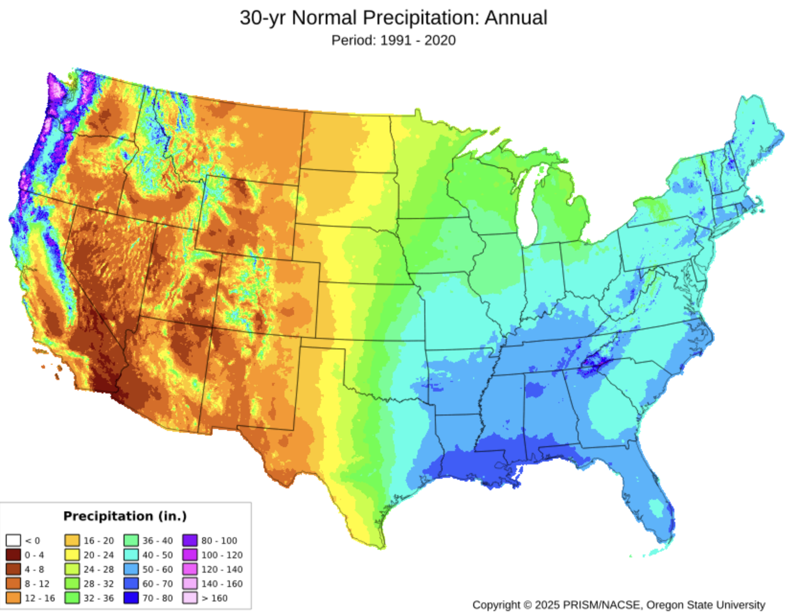
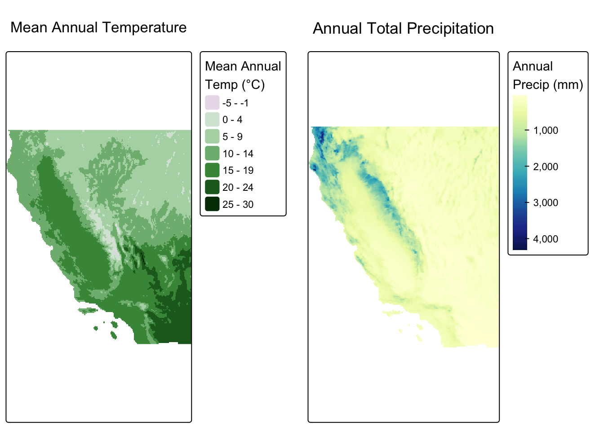
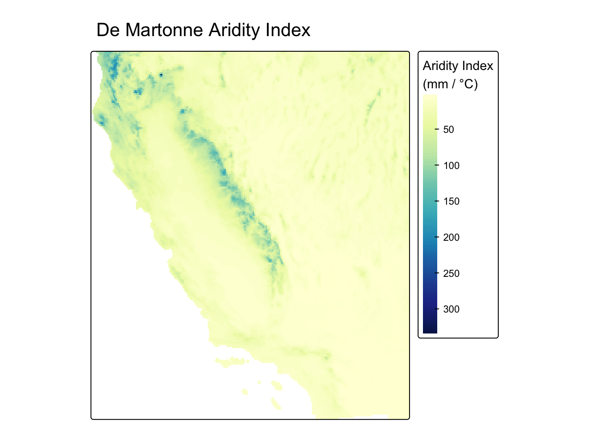
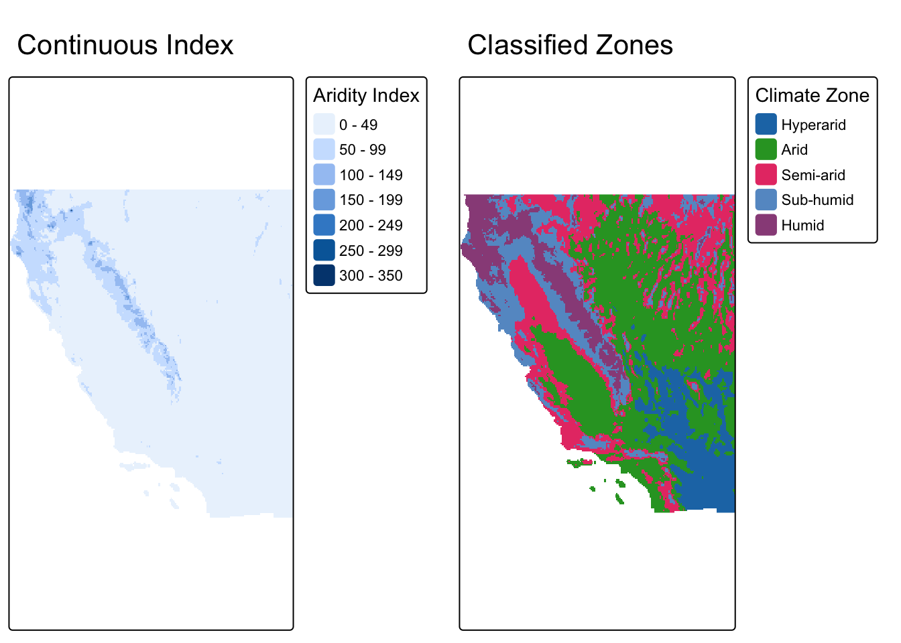
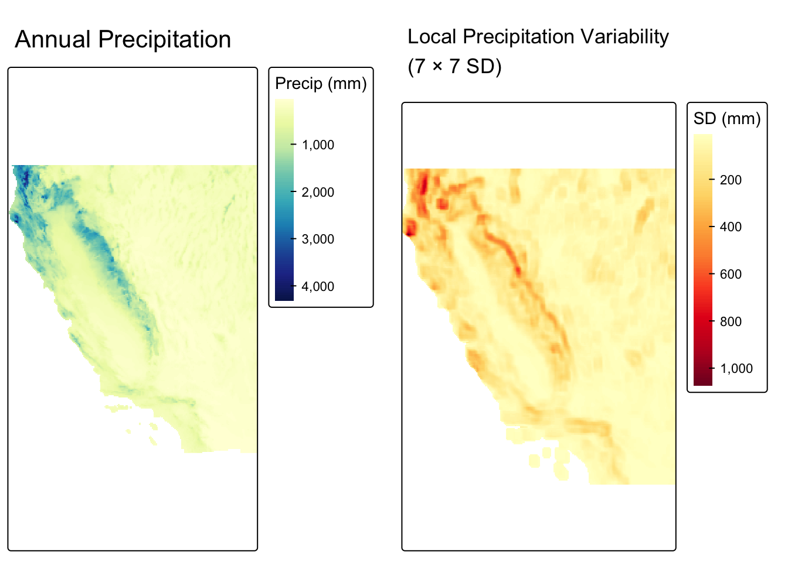
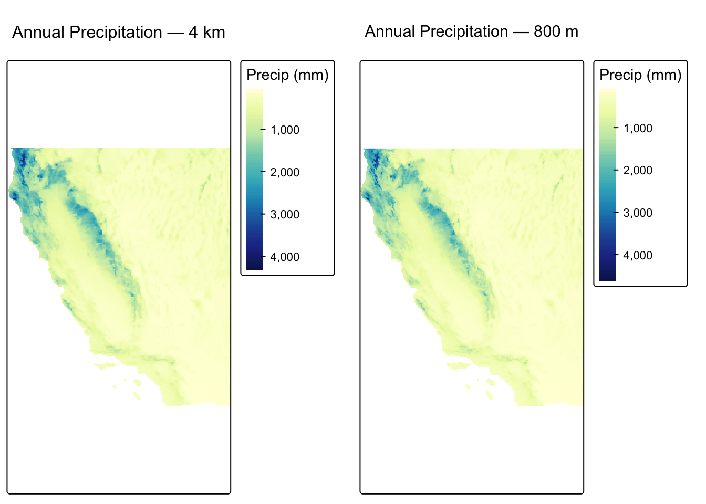
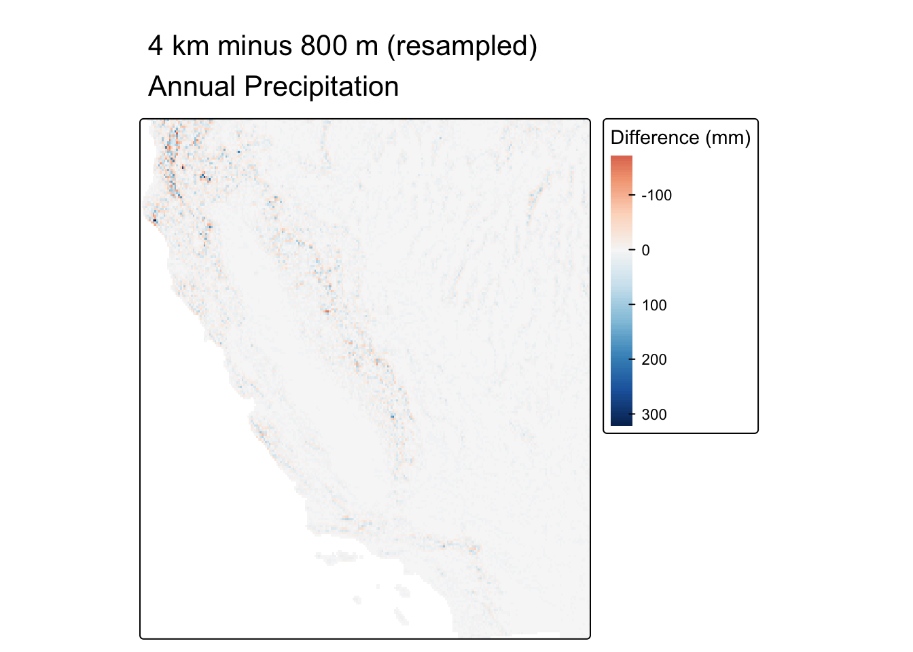

NoteOverview
California spans the full spectrum of western North American climates from the foggy Pacific Coast, the Central Valley, the Sierra Nevada, and the Mojave Desert, making it an excellent case study for climate analysis with raster data.
In this review, each map algebra operation is motivated by a concrete question that a real analyst would ask:
- Local operations: How arid or humid is each location, and which climate zone does it fall in?
- Focal operations: Where are the large-scale precipitation gradients, stripped of local noise?
- Zonal operations: How do temperature and precipitation vary across California’s climate regions?
- Resolution matching: What spatial detail is gained and what is the cost of using higher-resolution climate data?
Data: Annual mean temperature and annual total precipitation from PRISM Climate Group at Oregon State University. PRISM data must be downloaded manually through the project’s portal.
Pre Lab Prep
Data Download
ImportantDownload data
All data comes from the PRISM Climate Group portal. You will download three files total.
Step 2 — Download annual mean temperature (4 km)
On the Normals page:
- Set ** Spatial Resolution** to 4km
- Set Variable to Mean Temperature (tmean)
- Set Time Step to Annual
- Download the
.zipfile, unzip it, and save it to yourdatadirectory for your labs repo.
Step 3 — Download annual total precipitation (4 km)
Repeat Step 2 but change Variable to Precipitation (ppt):
Unzip into the same data/ folder.
Step 4 — Download annual total precipitation (800 m)
Repeat Step 3 but change Resolution to 800m:
Unzip into data/ as well. This higher-resolution file is used only in the Resolution Matching section.
Metadata Review
ImportantComplete this section before writing any code
Every PRISM ZIP archive includes a .xml file alongside the .tif raster. This XML contains the dataset’s metadata. Open the metadata for the three different datasets you downloaded and use it to answer the questions below. Store your answers in the table below.
Find and record each of the following. Fill in your answers in the summary table below:
Spatial resolution — What are the cell dimensions in degrees?
Coordinate reference system — What geographic coordinate system and datum are used?
Units for temperature — What units are temperature values reported in?
Units for precipitation — What units are precipitation values reported in?
Temporal coverage — What 30-year period do the normals represent?
| Property | PRISM 4 km (tmean) | PRISM 4 km (ppt) | PRISM 800 m (ppt) |
|---|---|---|---|
| Spatial Resolution | |||
| Temporal coverage | |||
| CRS | |||
| Units |
Setup
library(terra)
library(tidyverse)
library(tmap)
library(kableExtra)Load and Inspect Data
rast() reads GeoTIFF files directly. Each file contains a single layer.
annual_temp <- rast("data/prism_tmean_us_25m_2020_avg_30y/prism_tmean_us_25m_2020_avg_30y.tif")
annual_prec <- rast("data/prism_ppt_us_25m_2020_avg_30y/prism_ppt_us_25m_2020_avg_30y.tif")
prec_800m <- rast("data/prism_ppt_us_30s_2020_avg_30y/prism_ppt_us_30s_2020_avg_30y.tif")Before doing any analysis, inspect what you loaded:
cat("=== Annual Temperature ===\n")
cat("Resolution:", res(annual_temp), "\n")
cat("Extent: "); print(ext(annual_temp))
cat("\n=== Annual Precipitation (4 km) ===\n")
cat("Resolution:", res(annual_prec), "\n")
cat("Extent: "); print(ext(annual_prec))
cat("\n=== Annual Precipitation (800 m) ===\n")
cat("Resolution:", res(prec_800m), "\n")
cat("Extent: "); print(ext(prec_800m))
cat("\n=== Same CRS? ===\n")
cat("temp vs prec 4km: ", same.crs(annual_temp, annual_prec), "\n")
cat("4km vs 800m prec: ", same.crs(annual_prec, prec_800m), "\n")=== Annual Temperature ===
Resolution: 0.04166667 0.04166667
Extent: SpatExtent : -125.020833333333, -66.4791666661985, 24.0624999997935, 49.9375000000005 (xmin, xmax, ymin, ymax)
=== Annual Precipitation (4 km) ===
Resolution: 0.04166667 0.04166667
Extent: SpatExtent : -125.020833333333, -66.4791666661985, 24.0624999997935, 49.9375000000005 (xmin, xmax, ymin, ymax)
=== Annual Precipitation (800 m) ===
Resolution: 0.008333333 0.008333333
Extent: SpatExtent : -125.020833333331, -66.479166690081, 24.062500342571, 49.937500332221 (xmin, xmax, ymin, ymax)
=== Same CRS? ===
temp vs prec 4km: TRUE
4km vs 800m prec: TRUE Crop to California
PRISM normals cover the entire contiguous United States. We crop all three rasters to California’s bounding box before any analysis:
How can you determine the coordinates for a bounding box? A few reliable options:
- bboxfinder.com — draw a rectangle on a map and copy the coordinates directly
- boundingbox.klokantech.com — search by place name, adjust the box, and export in several formats including decimal degrees (CSV Raw Option)
- Google Maps — right-click any point to copy its latitude/longitude
- Other data you are using — if you already have a spatial object covering your area of interest,
ext()returns its bounding box
ca_ext <- ext(-124.4820030034, -114.13078174, 32.5295238201, 42.0094992115)
annual_temp_ca <- crop(annual_temp, ca_ext)
annual_prec_ca <- crop(annual_prec, ca_ext)
prec_800m_ca <- crop(prec_800m, ca_ext)Did changing the extent change our resolution at all? Let’s check:
cat("\n=== Resolution comparison ===\n")
cat("US Precip Resolution:", res(annual_prec), "\n")
cat("CA Precip Resolution:", res(annual_prec_ca), "\n")
cat("US Temp Resolution:", res(annual_temp), "\n")
cat("CA Temp Resolution:", res(annual_temp_ca), "\n")
cat("US Precip High Resolution:", res(prec_800m), "\n")
cat("CA Precip High Resolution:", res(prec_800m_ca), "\n")
=== Resolution comparison ===
US Precip Resolution: 0.04166667 0.04166667
CA Precip Resolution: 0.04166667 0.04166667
US Temp Resolution: 0.04166667 0.04166667
CA Temp Resolution: 0.04166667 0.04166667
US Precip High Resolution: 0.008333333 0.008333333
CA Precip High Resolution: 0.008333333 0.008333333 Nope! Changing the extent of our raster does not change the resolution. What does it change?
cat("\n=== Dimension comparison ===\n")
cat("US Precip Dimensions:", dim(annual_prec), "\n")
cat("CA Precip Dimensions:", dim(annual_prec_ca), "\n")
cat("US Temp Dimensions:", dim(annual_temp), "\n")
cat("CA Temp Dimensions:", dim(annual_temp_ca), "\n")
cat("US Precip High Dimensions:", dim(prec_800m), "\n")
cat("CA Precip High Dimensions:", dim(prec_800m_ca), "\n")
=== Dimension comparison ===
US Precip Dimensions: 621 1405 1
CA Precip Dimensions: 228 248 1
US Temp Dimensions: 621 1405 1
CA Temp Dimensions: 228 248 1
US Precip High Dimensions: 3105 7025 1
CA Precip High Dimensions: 1138 1242 1 A quick look at what we’re working with:
map1 <- tm_shape(annual_temp_ca) +
tm_raster(col.legend = tm_legend("Mean Annual\nTemp (°C)",
position = tm_pos_out("right", "center"))) +
tm_title("Mean Annual Temperature")
map2 <- tm_shape(annual_prec_ca) +
tm_raster(
col.legend = tm_legend("Annual\nPrecip (mm)",
position = tm_pos_out("right", "center")),
col.scale = tm_scale_continuous(values = "brewer.yl_gn_bu")
) +
tm_title("Annual Total Precipitation")
tmap_arrange(map1, map2, nrow = 1)
Map Algebra
Local Operations
Local operations are computed on each cell individually, either by transforming a single layer or combining multiple layers into one. No information from neighboring cells is used.
Computing a derived index with lapp()
Question: How arid or humid is each location, combining temperature and precipitation into a single metric?
lapp() applies a function using multiple raster layers as named arguments. Here we compute the de Martonne Aridity Index:
\[AI = \frac{P}{T + 10}\]
where \(P\) is annual precipitation (mm) and \(T\) is mean annual temperature (°C). Higher values indicate a more humid climate. The constant 10 prevents division by zero and keeps the index meaningful at sub-zero temperatures.
A single aridity metric captures the moisture balance that governs ecosystem type far better than either variable alone. It appears in drought monitoring systems, desertification risk mapping, and global biome classification.
climate_stack <- c(annual_prec_ca, annual_temp_ca)
aridity <- lapp(climate_stack, fun = function(p, t) p / (t + 10))
names(aridity) <- "aridity"tm_shape(aridity) +
tm_raster(
col.legend = tm_legend("Aridity Index\n(mm / °C)",
position = tm_pos_out("right", "center")),
col.scale = tm_scale_continuous(values = "brewer.yl_gn_bu")
) +
tm_title("De Martonne Aridity Index")
Reclassifying into discrete zones with classify()
Question: Which broad climate zone does each cell belong to?
The aridity index is a continuous surface. classify() bins it into discrete categories using a reclassification matrix, converting continuous values into a categorical raster.
The cut points below follow the de Martonne (1926) classification scheme:
| Aridity Index | Climate Zone |
|---|---|
| < 5 | Hyperarid |
| 5 – 15 | Arid |
| 15 – 25 | Semi-arid |
| 25 – 55 | Sub-humid |
| > 55 | Humid |
rcl <- matrix(c(
0, 5, 1,
5, 15, 2,
15, 25, 3,
25, 55, 4,
55, Inf, 5
), ncol = 3, byrow = TRUE)
climate_zones <- as.factor(classify(aridity, rcl = rcl))
levels(climate_zones) <- data.frame(
value = 1:5,
label = c("Hyperarid", "Arid", "Semi-arid", "Sub-humid", "Humid")
)map1 <- tm_shape(aridity) +
tm_raster(col.legend = tm_legend("Aridity Index",
position = tm_pos_out("right", "center"))) +
tm_title("Continuous Index")
map2 <- tm_shape(climate_zones) +
tm_raster(col.legend = tm_legend("Climate Zone",
position = tm_pos_out("right", "center"))) +
tm_title("Classified Zones")
tmap_arrange(map1, map2, nrow = 1)
Focal Operations
Focal operations compute a new value for each cell based on the values in a surrounding neighborhood (kernel). The window moves across every cell in the raster.
Question: Where is precipitation most spatially variable?
A focal standard deviation answers this directly: for each cell, focal() computes the standard deviation of precipitation across all cells in the surrounding 7 × 7 neighborhood. High values indicate that nearby cells span a wide range of precipitation totals; low values indicate a spatially uniform neighborhood.
prec_sd <- focal(
annual_prec_ca,
w = matrix(1, nrow = 7, ncol = 7),
fun = sd,
na.rm = TRUE
)map1 <- tm_shape(annual_prec_ca) +
tm_raster(
col.legend = tm_legend("Precip (mm)",
position = tm_pos_out("right", "center")),
col.scale = tm_scale_continuous(values = "brewer.yl_gn_bu")
) +
tm_title("Annual Precipitation")
map2 <- tm_shape(prec_sd) +
tm_raster(
col.legend = tm_legend("SD (mm)",
position = tm_pos_out("right", "center")),
col.scale = tm_scale_continuous(values = "brewer.yl_or_rd")
) +
tm_title("Local Precipitation Variability\n(7 × 7 SD)")
tmap_arrange(map1, map2, nrow = 1)
Zonal Operations
Zonal operations aggregate raster cell values based on spatially defined zones in a second categorical raster. Unlike focal operations, zones don’t need to be spatially contiguous. All cells sharing a zone label are aggregated together regardless of location.
Question: How do temperature and precipitation vary across California’s climate zones?
We already have a climate zone raster (derived from the aridity index). We can use those zones to compute summary statistics that reveal the full climatic profile of each region.
Why this matters: Understanding how temperature and precipitation co-vary by zone is fundamental to water resource planning, fire risk modeling, and projecting how ecosystem boundaries shift under climate change.
prec_by_zone <- zonal(annual_prec_ca, climate_zones, fun = "mean")
temp_by_zone <- zonal(annual_temp_ca, climate_zones, fun = "mean")bind_cols(temp_by_zone, prec_by_zone[, 2]) |>
kable(
col.names = c("Climate Zone", "Mean Annual Temp (°C)", "Mean Annual Precip (mm)"),
digits = 1
) |>
kable_styling(bootstrap_options = "striped")| Climate Zone | Mean Annual Temp (°C) | Mean Annual Precip (mm) |
|---|---|---|
| Hyperarid | 20.8 | 108.9 |
| Arid | 13.2 | 223.6 |
| Semi-arid | 10.9 | 399.1 |
| Sub-humid | 11.0 | 775.3 |
| Humid | 9.7 | 1577.7 |
Resolution Matching
PRISM distributes the same climate product at two resolutions: 4 km and 800 m. Even though they represent the same variable from the same source, the two grids cannot be used together in map algebra until they are aligned.
Comparing raster properties
cat("=== Resolution ===\n")
cat("4 km: ", res(annual_prec_ca), "\n")
cat("800 m:", res(prec_800m_ca), "\n\n")
cat("=== Same CRS? ===\n")
cat(same.crs(annual_prec_ca, prec_800m_ca), "\n")
cat("\n=== Origin ===\n")
cat("4 km origin: ", origin(annual_prec_ca), "\n")
cat("800 m origin: ", origin(prec_800m_ca), "\n")=== Resolution ===
4 km: 0.04166667 0.04166667
800 m: 0.008333333 0.008333333
=== Same CRS? ===
TRUE
=== Origin ===
4 km origin: -0.02083333 0.02083333
800 m origin: 0.004166617 -0.004166314 Despite sharing the same CRS, the two rasters differ in resolution and origin.
The grids are misaligned. Cell corners fall at different coordinates and cells are different sizes. Map algebra between these two rasters will fail or produce incorrect results.
Visualizing the resolution difference
map1 <- tm_shape(annual_prec_ca) +
tm_raster(
col.legend = tm_legend("Precip (mm)",
position = tm_pos_out("right", "center")),
col.scale = tm_scale_continuous(values = "brewer.yl_gn_bu")
) +
tm_title("Annual Precipitation — 4 km")
map2 <- tm_shape(prec_800m_ca) +
tm_raster(
col.legend = tm_legend("Precip (mm)",
position = tm_pos_out("right", "center")),
col.scale = tm_scale_continuous(values = "brewer.yl_gn_bu")
) +
tm_title("Annual Precipitation — 800 m")
tmap_arrange(map1, map2, nrow = 1)
Aligning with resample()
resample() transfers values from a source raster onto a new grid defined by a target raster’s resolution, extent, and origin:
prec_800m_resampled <- resample(prec_800m_ca, annual_prec_ca, method = "bilinear")
cat("After resampling to 4 km grid:\n")
cat("Resolutions match:", all(res(annual_prec_ca) == res(prec_800m_resampled)), "\n")
cat("Origins match: ", all(round(origin(annual_prec_ca), 8) ==
round(origin(prec_800m_resampled), 8)), "\n")
cat("Extents match: ", ext(annual_prec_ca) == ext(prec_800m_resampled), "\n")After resampling to 4 km grid:
Resolutions match: TRUE
Origins match: TRUE
Extents match: TRUE Now the grids align and we can perform map algebra. We will create a difference map that shows where the two products disagree most:
prec_diff <- annual_prec_ca - prec_800m_resampled
tm_shape(prec_diff) +
tm_raster(
col.legend = tm_legend("Difference (mm)",
position = tm_pos_out("right", "center")),
col.scale = tm_scale_continuous(values = "brewer.rd_bu", midpoint = 0)
) +
tm_title("4 km minus 800 m (resampled)\nAnnual Precipitation")
WarningDoes resampling to a coarser grid recover fine-scale detail?
No. Downsampling from 800 m to 4 km permanently discards fine-scale spatial structure. Each resampled cell is a bilinear interpolation of nearby fine-resolution cells. Features like narrow ridges and canyon floors that are resolved at 800 m are smoothed away at 4 km.